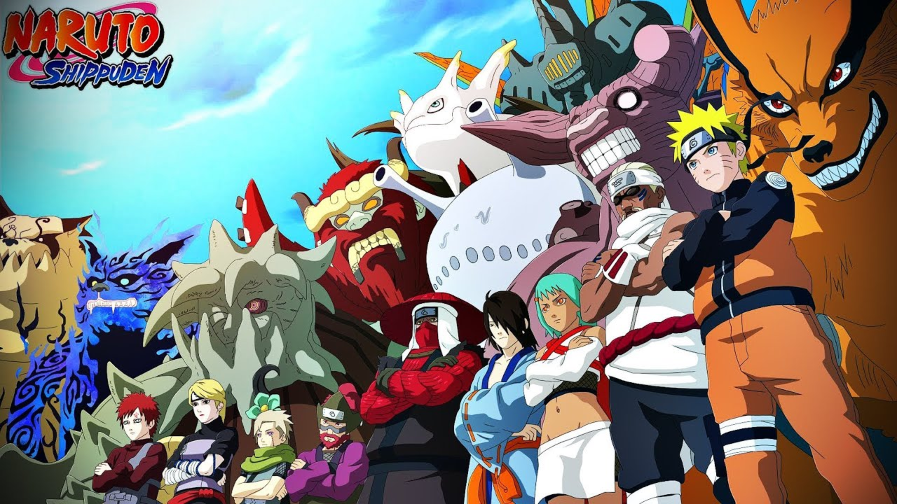
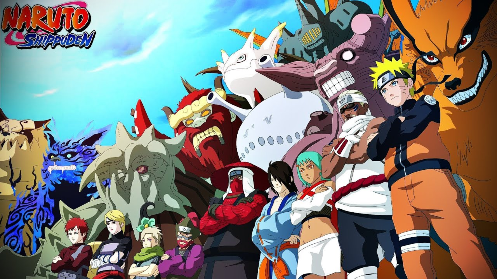

Naruto Shippuden se passa apos 2 anos do final de Naruto classico, após naruto ter ido treinar com jiraya, agora quais presepadas e desafio nosso naruto lidará agora agora em 20 temporadas essa grande odisseia se encerará e dara espaço a Boruto